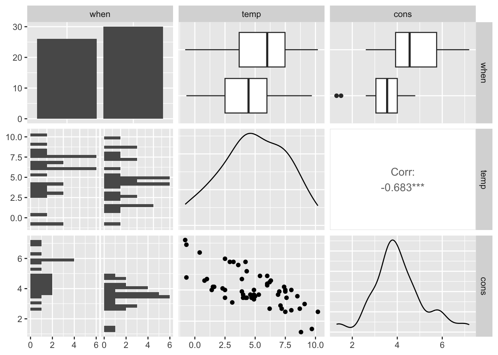
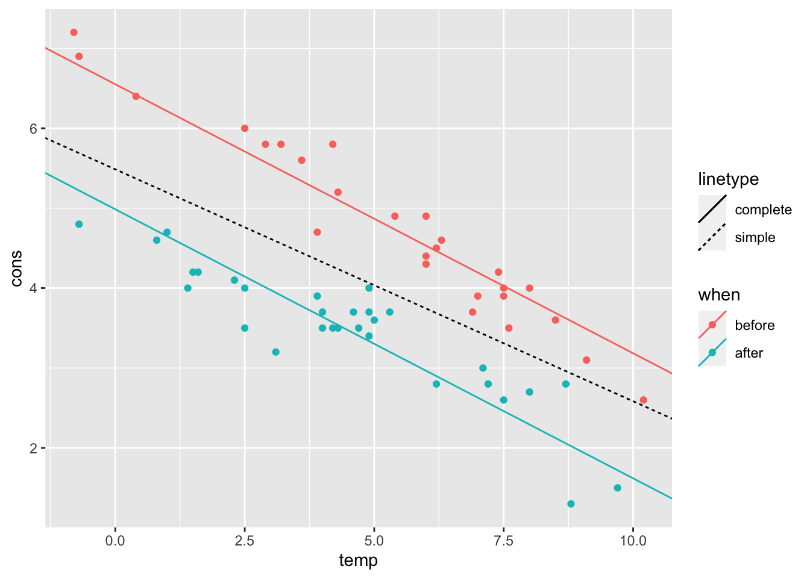
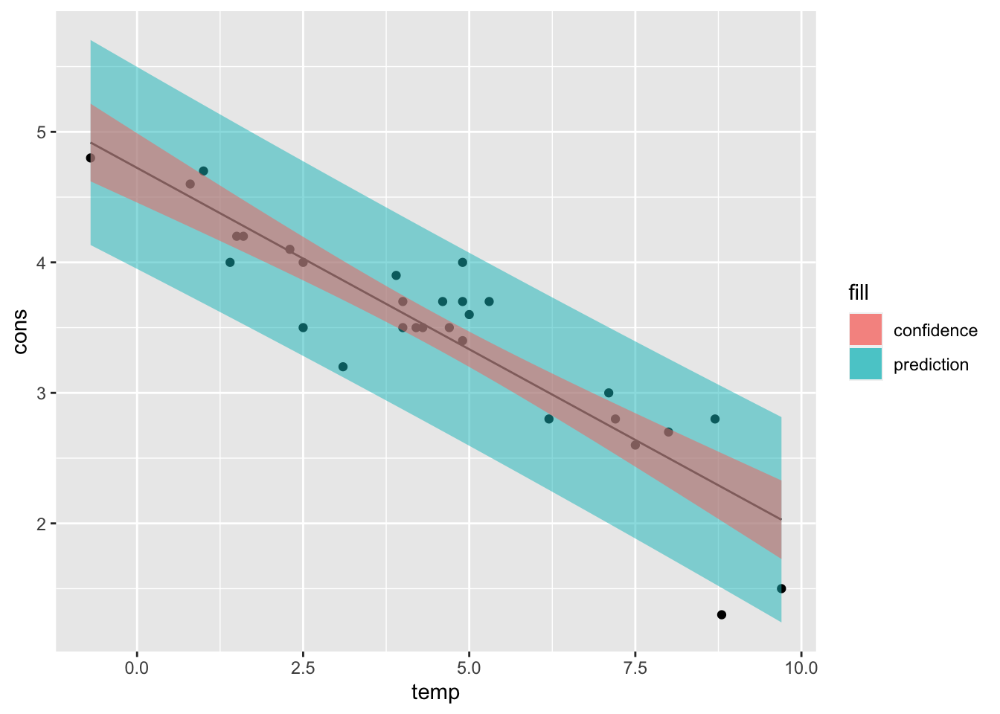

Chapter 12 Lab 2
This lab focuses on linear models and on the R functions dedicated to fitted linear models inspection.
For the following tasks, we will use a real dataset
featuring two predictors and one response variable (fuel consumption).
You can read some information inside the insulate.names text file.
The dataset can be found here.
12.1 EDA (20 min)
Start by loading the insulate.csv data in the R environment,
making sure that the type of the parsed variables is correctly inferred,
then explore it using the tools seen in the lectures (e.g. dimension,
summary, plots, etc.).
You might answer these questions:
- How many observations does the dataset provide?
Although it’s not necessary in this case, we explicitly specify
that the when variable needs to be parsed as factor.
library(dplyr)
library(readr)
# read the dataset
insulate <- read_csv("./datasets/insulate.csv", col_types = cols(
when = col_factor(),
temp = col_double(),
cons = col_double()
))
insulate## # A tibble: 56 × 3
## when temp cons
## <fct> <dbl> <dbl>
## 1 before -0.8 7.2
## 2 before -0.7 6.9
## 3 before 0.4 6.4
## 4 before 2.5 6
## 5 before 2.9 5.8
## 6 before 3.2 5.8
## 7 before 3.6 5.6
## 8 before 3.9 4.7
## 9 before 4.2 5.8
## 10 before 4.3 5.2
## # ℹ 46 more rowsThe dataset consists of 56 records.
- What are the predictors? Are they qualitative or quantitative?
The predictors are when, temp.
when is a qualitative predictor with two levels (before, after)
while temp is a continuous variable in the range \([-0.8, 10.2]\).
- What is the relationship between the response variable and the two predictors taken individually?
- Draw some useful plot and interpret what you see.
One of the most powerful plotting function is the pairs plot.
In ggplot it’s straightforward:
Note: beware that when dealing with bigger datasets (more predictors), as the number of plots scales with the square of the number of columns.
# plot (pair plot)
library(GGally)
ggpairs(insulate)## `stat_bin()` using `bins = 30`. Pick better value with `binwidth`.
## `stat_bin()` using `bins = 30`. Pick better value with `binwidth`.
From these plots we can see that, as we could imagine, the consumption goes down with higher temperatures and also there is a clear difference in the consumption mean before and after insulation.
12.2 Fitting a linear model (15 min)
Now use the lm() function to fit two linear models:
one which only uses the temperature as predictor, and one
with both predictors.
- Which one is better? Why?
simple_lm <- lm(cons ~ temp, data = insulate)
summary(simple_lm)##
## Call:
## lm(formula = cons ~ temp, data = insulate)
##
## Residuals:
## Min 1Q Median 3Q Max
## -1.6324 -0.7119 -0.2047 0.8187 1.5327
##
## Coefficients:
## Estimate Std. Error t value Pr(>|t|)
## (Intercept) 5.4862 0.2357 23.275 < 2e-16 ***
## temp -0.2902 0.0422 -6.876 6.55e-09 ***
## ---
## Signif. codes: 0 '***' 0.001 '**' 0.01 '*' 0.05 '.' 0.1 ' ' 1
##
## Residual standard error: 0.8606 on 54 degrees of freedom
## Multiple R-squared: 0.4668, Adjusted R-squared: 0.457
## F-statistic: 47.28 on 1 and 54 DF, p-value: 6.545e-09additive_lm <- lm(cons ~ ., data = insulate)
summary(additive_lm)##
## Call:
## lm(formula = cons ~ ., data = insulate)
##
## Residuals:
## Min 1Q Median 3Q Max
## -0.74236 -0.22291 0.04338 0.24377 0.74314
##
## Coefficients:
## Estimate Std. Error t value Pr(>|t|)
## (Intercept) 6.55133 0.11809 55.48 <2e-16 ***
## whenafter -1.56520 0.09705 -16.13 <2e-16 ***
## temp -0.33670 0.01776 -18.95 <2e-16 ***
## ---
## Signif. codes: 0 '***' 0.001 '**' 0.01 '*' 0.05 '.' 0.1 ' ' 1
##
## Residual standard error: 0.3574 on 53 degrees of freedom
## Multiple R-squared: 0.9097, Adjusted R-squared: 0.9063
## F-statistic: 267.1 on 2 and 53 DF, p-value: < 2.2e-16The R-squared index is much higher in the complete model,
suggesting that the when attribute retains valuable information.
- Plot both regression lines (you can use any plotting tool that you prefer)
The additive model regression line actually consists of two (parallel)
lines, one for each level of the qualitative predictor when.
Using color encoding in ggplot, we can differentiate between the two.
ggplot() +
geom_point(data = insulate, aes(temp, cons, color = when)) +
geom_abline(mapping = aes(linetype = "simple", intercept = simple_lm$coefficients[1], slope = simple_lm$coefficients[2])) +
geom_abline(mapping = aes(
linetype = "complete", color = c("after", "before"),
intercept = c(
additive_lm$coefficients[1] + additive_lm$coefficients[2],
additive_lm$coefficients[1]
),
slope = additive_lm$coefficients[3]
))
12.2.1 Interaction (10 min)
In this setting, we are mostly interested in whether we should include the interaction between the two predictors or not. If the effects of the predictors are additive, we don’t need interaction.
- Are the two effects additive? To answer this, follow the task in the next bullet point.
- Draw a plot showing the consumption trend against the temperature, separately for before and after insulation. You may (or may not) use the following code as template, which is enough to fulfill the task after replacing the ellipsis with the proper function arguments:
Hint: remember that, in order to differentiate between classes (i.e. before and after) in the same plot, you can select the class to be interpreted as color encoding for the points/line:
aes(..., color = when).
insulate %>% # dataset
ggplot(aes(temp, cons, color = when)) + # main ggplot call
geom_point() + # scatter plot
geom_smooth(method = "lm") # trend lineThe two lines are not parallel, which suggests that an additive model is not very accurate and we might try to include interaction.
- Fit a linear model which includes interaction between
tempandwhen.
interact_lm <- lm(cons ~ when * temp, data = insulate)
summary(interact_lm)##
## Call:
## lm(formula = cons ~ when * temp, data = insulate)
##
## Residuals:
## Min 1Q Median 3Q Max
## -0.97802 -0.18011 0.03757 0.20930 0.63803
##
## Coefficients:
## Estimate Std. Error t value Pr(>|t|)
## (Intercept) 6.85383 0.13596 50.409 < 2e-16 ***
## whenafter -2.12998 0.18009 -11.827 2.32e-16 ***
## temp -0.39324 0.02249 -17.487 < 2e-16 ***
## whenafter:temp 0.11530 0.03211 3.591 0.000731 ***
## ---
## Signif. codes: 0 '***' 0.001 '**' 0.01 '*' 0.05 '.' 0.1 ' ' 1
##
## Residual standard error: 0.323 on 52 degrees of freedom
## Multiple R-squared: 0.9277, Adjusted R-squared: 0.9235
## F-statistic: 222.3 on 3 and 52 DF, p-value: < 2.2e-16- How many additional parameters does the model have to estimate?
Just one additional parameter is required.
12.3 AIC and model selection (10 min)
Looking at the R-squared index, the model with interaction seems to perform a bit better. However, this doesn’t mean that the interaction model is a better choice.
- After assessing that we can compare the additive with interaction models through the ANOVA test, checking the main prerequisite (nested models), run an ANOVA test comparing the two models, analyze the result, draw a conclusion.
anova(additive_lm, interact_lm)## Analysis of Variance Table
##
## Model 1: cons ~ when + temp
## Model 2: cons ~ when * temp
## Res.Df RSS Df Sum of Sq F Pr(>F)
## 1 53 6.7704
## 2 52 5.4252 1 1.3451 12.893 0.0007307 ***
## ---
## Signif. codes: 0 '***' 0.001 '**' 0.01 '*' 0.05 '.' 0.1 ' ' 1Interaction with * also includes the singular
variables, therefore the additive model is nested into interaction.
Another criterion used for model selection is the Akaike Information Criterion, which is defined as
\[ \text{AIC} = 2k - 2\ln(\hat L) \]
where \(\hat L\) is the maximized likelihood of the data i.e. \(p(y | \hat \beta)\). The AIC takes into consideration the model complexity (number of predictors considered), favoring small models over the bigger ones.
- Find the AIC index using the dedicated function
AIC(). Which model is better according to the AIC? Why?
AIC(additive_lm, interact_lm)## df AIC
## additive_lm 4 48.60465
## interact_lm 5 38.20098A lower index for the interaction model means that the additional parameter is worth the higher complexity in favor of better fit (likelihood).
12.4 Prediction intervals (35 min)
Imagine we have a new unseen (future) row of observed measures \(x_f\), with no true response observation (\(Y_f\) is unknown).
We are interested in making inference on the mean \(x_f \beta\). As you’ve seen in the theory lectures, this is a particular case of the inference of \(C \beta\). Being just one row, the F-type intervals can be translated to T-type intervals:
\[ F_{\alpha}(1, n-p) = t^2_{\frac{\alpha}{2}}(n-p) \]
These are standard confidence intervals, and you can find
them with predict.lm(..., interval = "confidence").
- Find a prediction for the following additional rows using the best model you found so far, together with their confidence intervals.
when,temp
before,5.8
before,-1.0
after,4.8
after,9.8With new observations, instead of making inference on the coefficients \(\beta\), we can make inference on the unseen response variable \(Y_f\). In this case we are not doing either estimation or testing, but rather just prediction. In machine learning the focus of inference is prediction: neural networks, for instance, have a large set of parameters which are learnt automatically from the data, but their values are most of the times non-interpretable, thus not useful per se, while the output of interest is \(\hat Y_f\), eventually together with its uncertainty.
Inference on \(Y_f\) can be derived similarly to how you did with confidence intervals. Formally (but not too much in detail):
\[ Y_f \sim \mathcal N(x_f'\beta, \sigma^2) \]
independent from \(Y_1, ..., Y_n\). Under the homogeneity assumption of the future response with respect to the past,
\[ x_f'\hat\beta = \hat Y \sim \mathcal N(x_f'\beta, \sigma^2 x_f' (X'X)^{-1}x_f)\,. \]
This leads to
\[ Y_f - \hat Y_f \sim \mathcal N(0, \sigma(1 + x_f'(X'X)^{-1}x_f))\,, \]
which gives us the prediction intervals:
\[ \hat Y_f \pm t_{\frac{\alpha}{2}}(n-p)\sqrt{\text{MSR}(1 + x_f'(X'X)^{-1}x_f)}\,. \]
- Using this formula, compute the prediction intervals for one of the four new future observations written above (from scratch).
Hint: We’ve seen how to compute the \(\text{MSR}\) (or \(\text{RMS}\)) in the first linear regression R lecture
# compute RMS
e <- interact_lm$residuals
n <- nrow(insulate)
p <- length(interact_lm$coefficients)
rms <- t(e) %*% e / (n - p)
library(tibble)
# x_f with dummy variables:
# intercept whenafter temp whenafter:temp
# 1 0 (before) 5.8 0 (0 * 5.8)
x_f <- c(1, 0, 5.8, 0)
yhat_f <- x_f %*% interact_lm$coefficients
# note: there are several ways of getting yhat_f
# another way is to use `predict` with x_f not "dummyfied"
# get dummy x matrix
x <- with(insulate, model.matrix(~ when * temp))
# compute above formula
alpha <- .05 # level
delta <- qt(1 - (alpha / 2), df = n - p) * sqrt(rms * (1 + t(x_f) %*% solve(t(x) %*% x) %*% x_f))
lwr <- yhat_f - delta
upr <- yhat_f + delta
pred_interval <- data.frame(fit = yhat_f, lwr = lwr, upr = upr)
pred_interval## fit lwr upr
## 1 4.573043 3.912228 5.233857- Check your computations using
predict.lm(..., interval = "prediction")
# check that computations are correct
x_f0 <- tibble(when = "before", temp = 5.8) # plain newdata row
predict(interact_lm, newdata = x_f0, interval = "prediction")## fit lwr upr
## 1 4.573043 3.912228 5.233857- Is the interval center the same as for the confidence intervals?
Yes, it’s still \(\hat Y\).
- Is the prediction interval wider or more narrow than the CI? Can you tell why (intuitively)?
predict(interact_lm, newdata = x_f0, interval = "confidence")## fit lwr upr
## 1 4.573043 4.444317 4.701768It is wider because we are trying to predict where a new observation will be and that new observation has an additional standard deviation of the error term. Confidence intervals are based on only the fitted values and do not involve making a prediction. It represents the uncertainty in the “fitted” value. Prediction intervals must account for both the uncertainty in estimating the population mean, plus the random variation of the individual values. So a prediction interval is always wider than a confidence interval.
12.5 Plotting intervals
Plotting of the intervals was not required, but it might be useful to visualize them.
For this purpose, we will just use the records of the after class.
# build x grid
after_insulate <-
insulate %>%
dplyr::filter(when == "after") %>%
dplyr::select(-when)
# fit a simple model
after_simple_lm <- lm(cons ~ temp, data = after_insulate)
# build a vector of new data spanning the whole temp support
new_x <- tibble(temp = seq(min(after_insulate$temp), max(after_insulate$temp), by = 0.05))
# find confidence and prediction intervals for all of the range elements
# and change the column names to make them distinguishable
new_pred <- predict(after_simple_lm, newdata = new_x, interval = "prediction") %>%
as_tibble() %>%
rename_with(~ paste(.x, "pred", sep = "_")) #
new_conf <- predict(after_simple_lm, newdata = new_x, interval = "confidence") %>%
as_tibble() %>%
rename_with(~ paste(.x, "conf", sep = "_"))
# join the two interval details
new_data <- bind_cols(new_x, new_pred, new_conf)
ggplot() +
geom_point(aes(temp, cons), data = after_insulate) + # scatter plot
geom_line(aes(temp, fit_conf), data = new_data) + # regression line
geom_ribbon(aes(temp, ymin = lwr_pred, ymax = upr_pred, fill = "prediction"),
data = new_data, alpha = .5
) + # pred intervals
geom_ribbon(aes(temp, ymin = lwr_conf, ymax = upr_conf, fill = "confidence"),
data = new_data, alpha = .5
) # conf intervals
Notice how the intervals get wider when departing from the mean temperature \(\bar x\).
## tweaking contrast## tweaking pscl